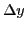
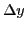

Next: Differentiation of inverse functions Up: Rules for differentiating standard Previous: Examples Contents Index
It sometimes happens that  , instead of being defined directly as
a function of
, instead of being defined directly as
a function of  , is given as a function of another variable
, is given as a function of another variable  , which is
defined as a function of
, which is
defined as a function of  . In that case
. In that case  is a function of
is a function of  through
through
 and is called a function of a function
or a composite function.
The process of substituting one function into another is sometimes
called composition.
and is called a function of a function
or a composite function.
The process of substituting one function into another is sometimes
called composition.
For example, if
,
and ,
then  is a function of a function. By eliminating
is a function of a function. By eliminating  we may express
we may express
 directly as a function of
directly as a function of  , but in general this is not the best plan when
we wish to find
, but in general this is not the best plan when
we wish to find
 .
.
If and , then  is a function of
is a function of  through
through  .
Hence, when we let
.
Hence, when we let  take on an increment
take on an increment  ,
,  will take on an increment
will take on an increment
 and
and  will also take on a corresponding increment .
Keeping this in mind, let us apply the General Rule simultaneously
to the two functions and .
will also take on a corresponding increment .
Keeping this in mind, let us apply the General Rule simultaneously
to the two functions and .
The left-hand members show one form of the ratio of the increment of each function to the increment of the corresponding variable, and the right-hand members exhibit the same ratios in another form. Before passing to the limit let us form a product of these two ratios, choosing the left-hand forms for this purpose.
This gives , which equals . Write this